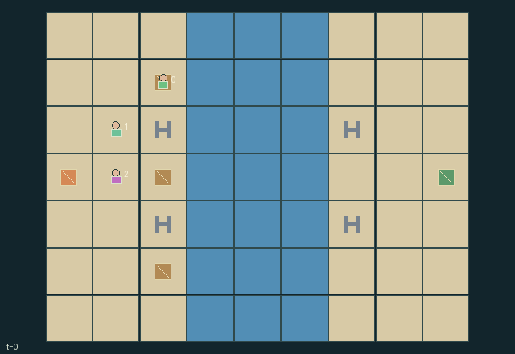

GI140 · Two-bank Trestle

Use three beams and two reusable clamps to carry the single heavy crate from the west bank to within one cell of (8,3). Successful delivery rewards every role +1.
Identity and original contract
3 independently actionable roles; 11 discrete commands per role; 128 native observation columns per role; original horizon 128 steps. Declared per-step reward range: -1 to 1. Observation regime: fully_observable.
Source SHA-256: 31f01f76be6f5741e75f16e0f04cc65c6fae797175ed3894cc56cd5dd5f41f47
The objective, rewards, population, map and horizon remain original. A preview is not a success claim.
Objective and gameplay
Use three beams and two reusable clamps to carry the single heavy crate from the west bank to within one cell of (8,3). Successful delivery rewards every role +1.
Only the carpenter can reposition beams and only the rigger can engage clamps. A path to one clamped bank carries workers; paths to both banks carry cargo. A support edit therefore changes another role's movement opportunities and can cause immediate load failure.
- Carpenter carries one of three beams; rigger allocates two clamps among four bank anchors; hauler carries the heavy crate.
- Beam slots are x=3..5 at y=2 or y=4. A beam graph reaching one clamped bank supports workers; reaching both banks supports heavy cargo.
- Movement uses old support. Carpenter/rigger edits then change support, collapse unattached installed beams, and check current workers and cargo.
- Recovering a beam or releasing a clamp can strand another worker or destroy a heavy crossing. Lost beams never return.
- All movement into currently occupied cells is blocked; competing empty-target moves are all rejected.
- Delivery gives +1 each; any support/load failure ends the episode with -1 each. No execution or solvability result is claimed.
Ending: Delivery or any unsupported worker/cargo loss terminates. A simultaneous failure takes reward priority (-1 each). Otherwise 128 steps truncate.
What this game explores
Joint transport & shared access: Positions, load geometry, occupancy and persistent access constrain whose action can succeed next. Distinguish physical handoff, shared controls and simultaneous force from a cosmetic cooperation label.
Survival, protection & rescue: Protection and repair alter another role's future feasible actions. Record losses, exposure, rescue and infrastructure as well as delivery; survival is determined by the actual kernel.
These are questions supported by rule structure, not observed learning effects.
Play it: operating walkthrough
crucibles play --game gi140Keep Python running and open its printed address. Select this game, set a seed and press Create session. The game itself is always English.
Assign a role range to Host with Assign / take over, or Assign all roles. Invite a second participant with Create player invitation, then assign a disjoint subset. Every original role is available.
For every owned role choose a legal command and press Queue. Arrow keys / WASD queue a declared directional action for the current role camera when available. Space or Advance one joint step advances everyone together. Non-directional games use the selectors.
Unqueued roles use the labelled untrained uniform-legal policy. Take over or release roles before the next step without resetting. Full-state debug is privileged and permanently logged; role cameras preserve permissions. Close the session to retain logs. Server restart does not restore sessions.
Complete command reference
IDs and English labels exactly match the manifest. Availability depends on role, resources, location and phase. An available action can still have no productive effect.
0·Wait
1·Move north
2·Move east
3·Move south
4·Move west
5·Lift nearby stock beam (carpenter) or cargo (hauler); rigger no-op
6·Tool north: place/recover beam, toggle clamp, or drop cargo
7·Tool east: place/recover beam, toggle clamp, or drop cargo
8·Tool south: place/recover beam, toggle clamp, or drop cargo
9·Tool west: place/recover beam, toggle clamp, or drop cargo
10·Deliver heavy cargo within one cell of the east depot; other roles no-op
Roles and capability identifiers
These original role names describe capabilities, not interchangeable skins. Check each owned role's legal selector before planning handoffs.
agent_0·carpenter: carry/place/recover beams
agent_1·rigger: move two reusable anchor clamps
agent_2·hauler: lift/drop/deliver heavy cargo
Information and observation permissions
All positions, tool roles, inventories implied by ownership, structural support, clamps, cargo and event flags are public. Every entity is visible to every role; the live map is a public rendering of the exact support rule.
The GIF is full-state debug and may reveal hidden entities or private state. Train on obs[agent], not the picture, state tree or another role's private row. Field slices and visibility are in the original manifest.
Reinforcement-learning integration
import jax
from crucibles_jaxmarl import make
env = make("gi140")
key = jax.random.PRNGKey(0)
key, rk, ak, sk = jax.random.split(key, 4)
obs, state = jax.jit(env.reset)(rk)
actions = env.sample_actions(ak, state)
obs, state, rewards, dones, info = jax.jit(env.step_env)(sk, state, actions)
done = dones["__all__"]Observations are float32 vectors of width 128; actions are scalar int32; masks have 11 entries. Supply all 3 roles each transition. Masked sampling is an engineering reference, not a trained learner.
step_env retains terminal data without reset. step performs outer autoreset and keeps terminal data in info["raw_state"] and info["raw_observation"]. Use dones["__all__"] for episode boundaries; separate completion, failure and time limit in analysis.
JIT or vmap equal identities and shapes. Split independent reset, policy and transition keys. Group different shapes explicitly; do not shrink the population or horizon. Host rendering stays outside training.
Training questions and fair evaluation
Define valid completion from the objective before fitting. Preserve original rewards and also report real deliveries/services, losses, resource state, unresolved episodes and per-role returns. Animation is not a reward signal.
Positions, load geometry, occupancy and persistent access constrain whose action can succeed next. Distinguish physical handoff, shared controls and simultaneous force from a cosmetic cooperation label.
Protection and repair alter another role's future feasible actions. Record losses, exposure, rescue and infrastructure as well as delivery; survival is determined by the actual kernel.
Compare memory, communication or centralized critics under matched actor information. Declare critic access; keep actor inputs role-filtered. Match partner/opponent distributions, masks, compute and checkpoint selection. Final tests never enter fitting or selection.
Independent training runs or source-pairing blocks are inferential units; episodes from one policy are not independent training replications. Save hashes, keys, versions, device, time and cost. Negative, zero, failed and indeterminate outcomes are valid. No trained checkpoint or target score is supplied.
Classification and evidence
Overlapping editorial labels are reading aids, not proof of novelty, difficulty, strategic equivalence or learning effects.
- Joint transport & shared access
- Evidence
manifest.task.objective: Use three beams and two reusable clamps to carry the single heavy crate from the west bank to within one cell of (8,3). Successful delivery rewards every role +1.
- Evidence
manifest.actions.5: Lift nearby stock beam (carpenter) or cargo (hauler); rigger no-op
- Evidence
manifest.actions.6: Tool north: place/recover beam, toggle clamp, or drop cargo
- Survival, protection & rescue
- Evidence
scene.rules.2: Movement uses old support. Carpenter/rigger edits then change support, collapse unattached installed beams, and check current workers and cargo.
Source, receipts and preview limits
The world-only English GIF replays saved untrained legal actions through the original kernel. At most 25 actual endpoints include initial and terminal state; no invented interpolation. It is full-state debug, not the role observation.
Original source, observation slices, manifest and mechanism
Native receipt · Presentation receipt
Engineering passes do not establish learning. Nonzero floating differences remain recorded and undetermined; no new tolerance was introduced. Human scores remain unverified.